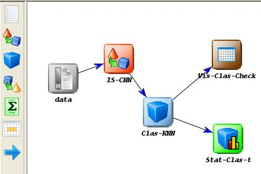
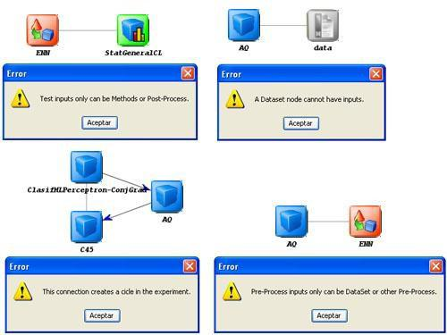

The connections allow finishing the designing of the experiment, by connecting the included modules with flows which represent the data flow in the experiment. They can be used both as inputs or outputs of the modules.
- Insert connection: to make a connection, select the connections button from the left tool bar. Then, click on the source node and finally click on the target node.

- Restrictions: there are some restrictions that must be considered when making connections between the different elements:
- A dataset cannot have inputs.
- The pre-processing algorithms can only receive inputs from a data set or another pre-process method.
- Knowledge extraction methods can receive a flow from a data set, from a pre-processing algorithm or from a previous method.
- The test and visualization modules must receive input data from a method or from a post-processing algorithm.
- Test and visualization modules cannot have outputs.
- The graph cannot have any cycle.
All these restrictions are verified in execution time when a connection is been created. If one of these connections is not allowed, the application will show an error message. In next figures some examples of incorrect graphs are shown:
